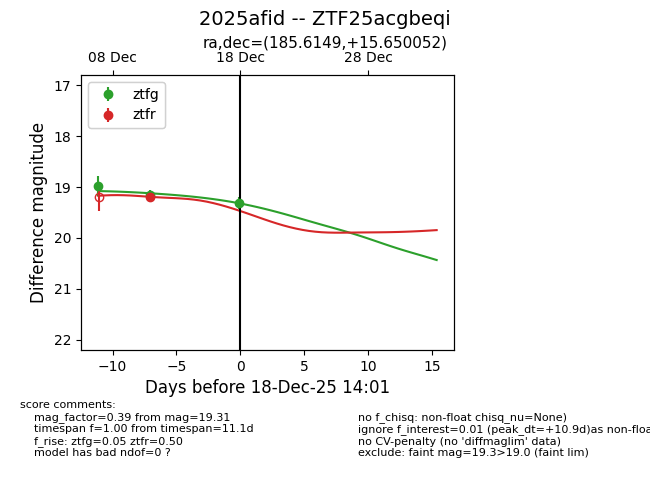
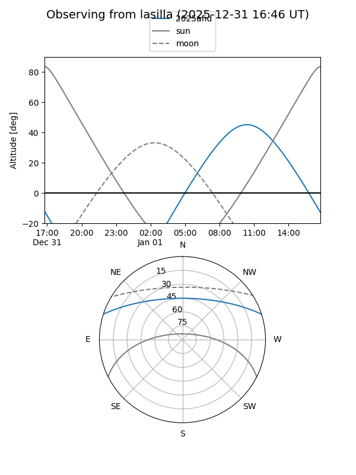
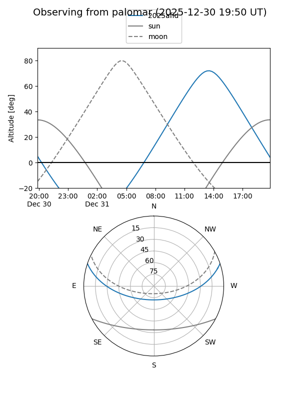
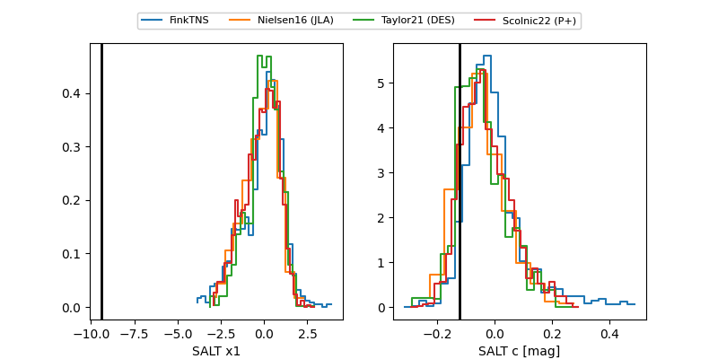

2025afid
Target 2025afid at 2025-12-31 16:59
Aliases and brokers:
FINK:
Lasair:
ALeRCE:
TNS:
YSE:
alt names
ZTF25acgbeqi (ztf,fink_ztf)
2025afid (tns,yse)
Coordinates:
equatorial (ra, dec) = 185.6149,+15.65005
equatorial (HMS+DMS) = 12:22:27.59,+15:39:00.19
galactic (l, b) = (271.0853,+76.69507)
Flags:
Photometry:
last ztfg=19.54, ztfr=19.50
4 ztfg, 3 ztfr detections
Lightcurve

Visibility


Additional plots
